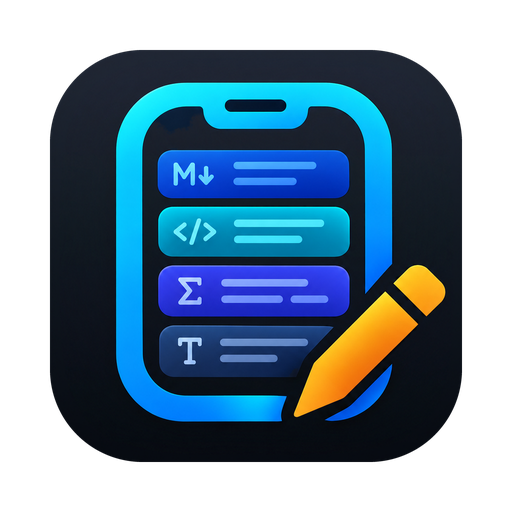
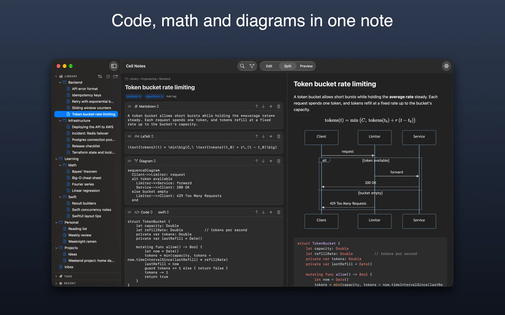
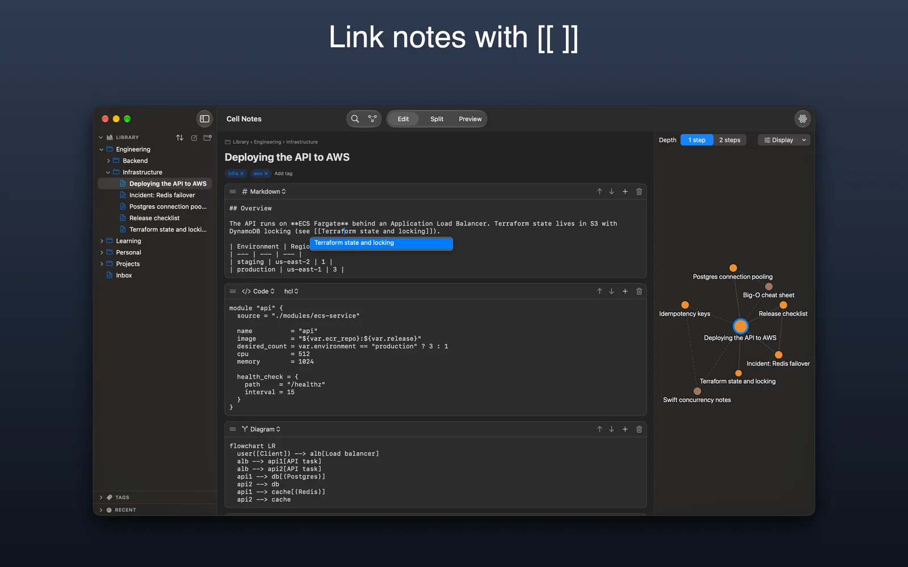
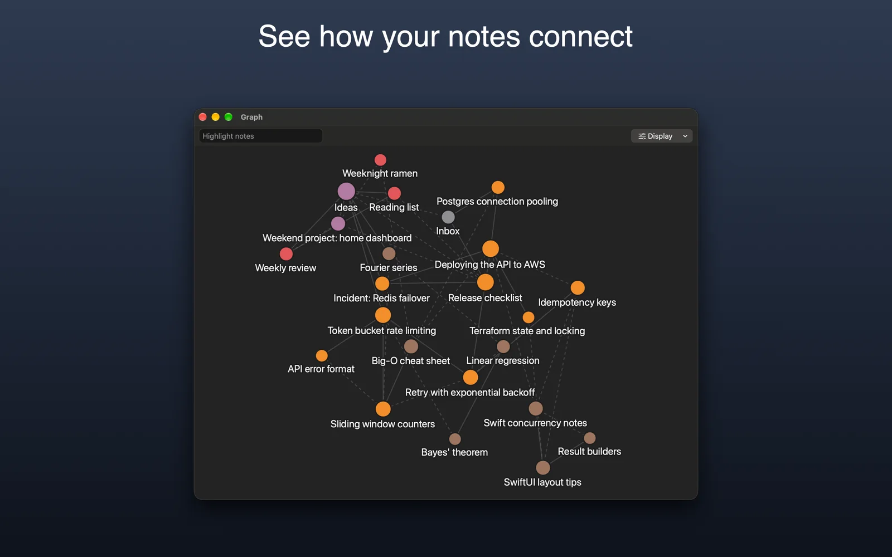
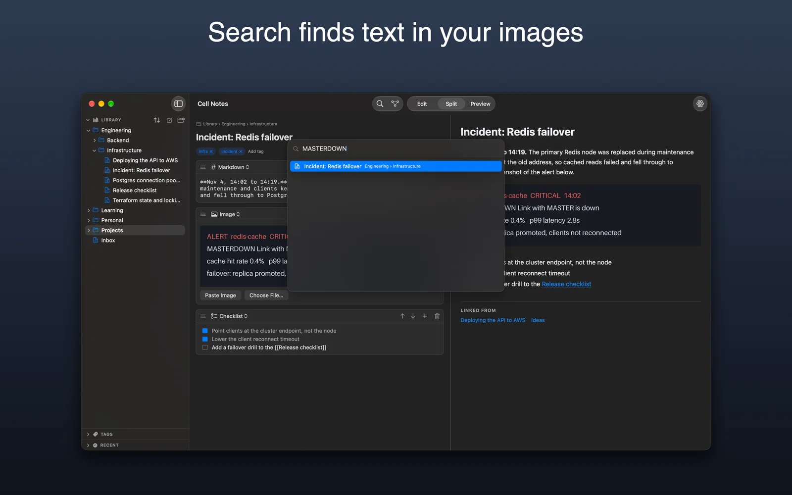
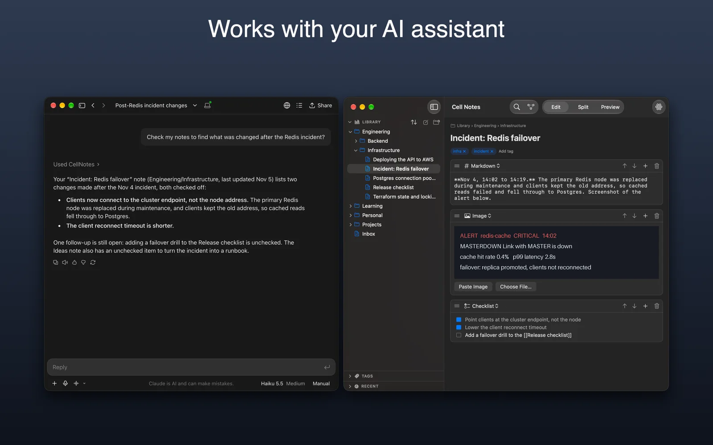
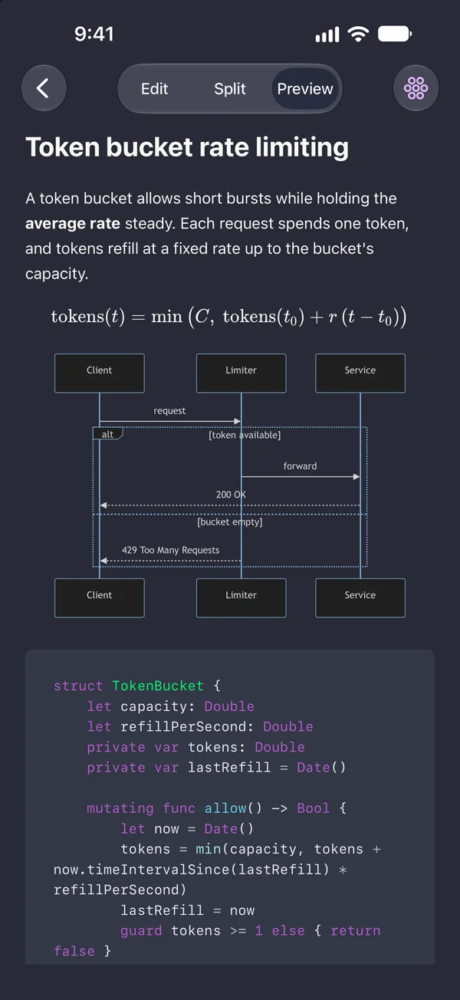
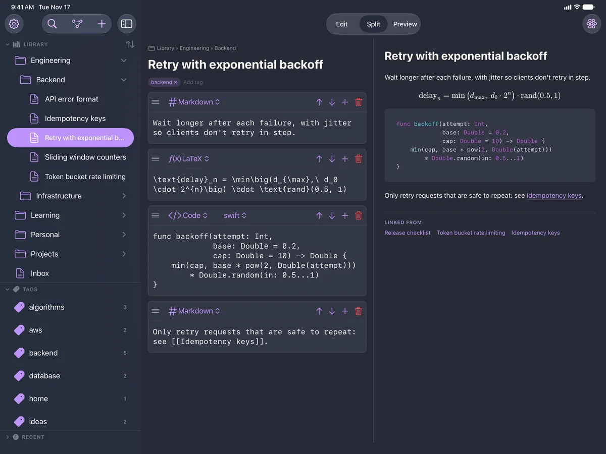
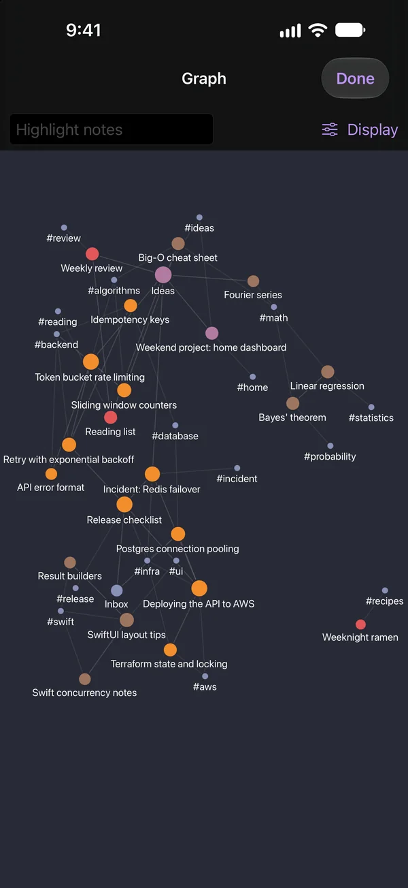
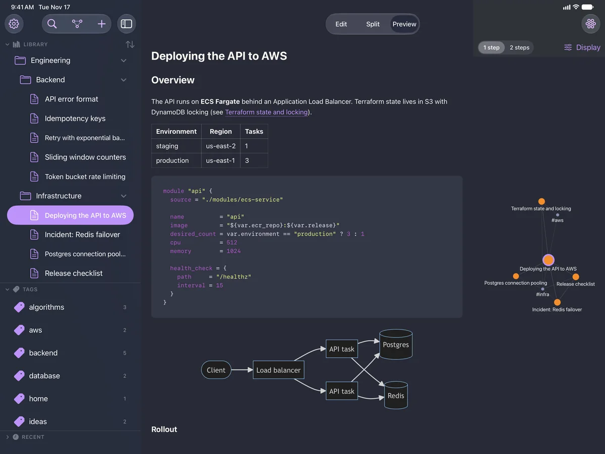

CellNotes
Notes made of cells, for Mac, iPhone and iPad.
Requires macOS 15 or later, or iOS 17 or later.

Every note in CellNotes is a stack of cells, and each cell has its own type. Write a paragraph in Markdown, add a snippet of code, follow it with an equation and a diagram, and each part is edited and displayed the way it should be.
Cells for every kind of note
Markdown and text
Headings, lists, links and tables, rendered as you write.
Code
Syntax highlighting for over 20 languages.
LaTeX math
Equations typeset properly, right in the note.
Diagrams
Flowcharts and sequence diagrams written in Mermaid.
Images
Paste a screenshot straight from the clipboard.
Checklists
Tick items off in the editor or the preview.
Link your notes
Type [[ in any cell and pick a note to link to it. Every note shows what links back to it under Linked from, so related ideas stay one click apart.

The graph view draws your whole library as a map of notes, links and tags. Open it from the toolbar on any device, or view just the neighborhood around the note you are reading.

Find anything
Press ⌘F to jump to any note or folder, or type #tag to filter by tag. On the Mac, CellNotes also reads the text in your images, so a screenshot of an error message or a photo of a whiteboard turns up in search. It happens on your Mac with Apple's Vision framework, nothing is uploaded, and a setting turns it off. Your notes also appear in Spotlight and Siri.

Organize your way
Folders
Real folders you can nest, drag notes into, and see in Finder and Files.
Tags
Label notes across folders, with colors, counts and a click to filter.
Your order
Sort by name or date, or drag notes and folders into the order you want.
Sidebar sections
Library, Tags and Recent, each collapsible and reorderable.
Graph view
See how notes, links and tags connect.
Quiver import
Bring in a Quiver library, with notebooks as folders and tags kept.
Built for writing
Resizable Split view
Drag the divider between editor and preview. On narrow screens they stack.
Multiple cursors
Option-click, ⌘D and column selection in text cells on the Mac.
Duplicate cells
Copy any cell or a whole note in one click.
Smart checklists
Arrow keys move between items, and selections span items.
Move between cells
⌘↑ and ⌘↓ step through cells, and pasted images become image cells.
Large libraries
Big custom library folders open quickly and stay responsive.
Works with Claude and other AI assistants
Mac only
CellNotes includes a built-in MCP server, so Claude and other assistants can work with your notes. Ask Claude what changed after an incident, which notes mention a topic, or to add a cell to today's note.

- Lean by design: assistants start with a library overview and note outlines, read only the cells they need, make small edits to a single cell, and ask what changed since they last looked.
- Finds notes by meaning: semantic search runs on your Mac, so an assistant can find the right note without reading your whole library.
- Understands your links: assistants can follow links and backlinks, see related notes and read the graph.
- Writes summaries: an assistant can add a short summary to a note, which shows under the note's title in Spotlight.
- Folders, tags and checklists: list, search, read, create and edit notes, folders and tags, and tick checklist items.
Install it in Claude from Settings > Assistants. There is nothing else to download, and a switch turns it off whenever you like. The helper is sandboxed and talks only to the CellNotes app, never to your files directly, and CellNotes opens quietly in the background when an assistant needs it.
Shortcuts and Siri
CellNotes adds actions to the Shortcuts app on Mac, iPhone and iPad. Create notes, find them and append to them from your own shortcuts, or ask Siri.
On your Mac, iPhone and iPad
The same notes on every device, with an editor and preview made for each screen. CellNotes also fits the iPhone Duo and narrow iPad windows.




Your notes are your files
Notes are saved as plain files in a CellNotes folder in your iCloud Drive, so they sync across your devices and you can browse, back up or search them like any other files. Nothing is locked inside the app.
Private by design
No account, no tracking, no ads. CellNotes collects no data, and the assistant server stays on your Mac. Read the privacy policy.